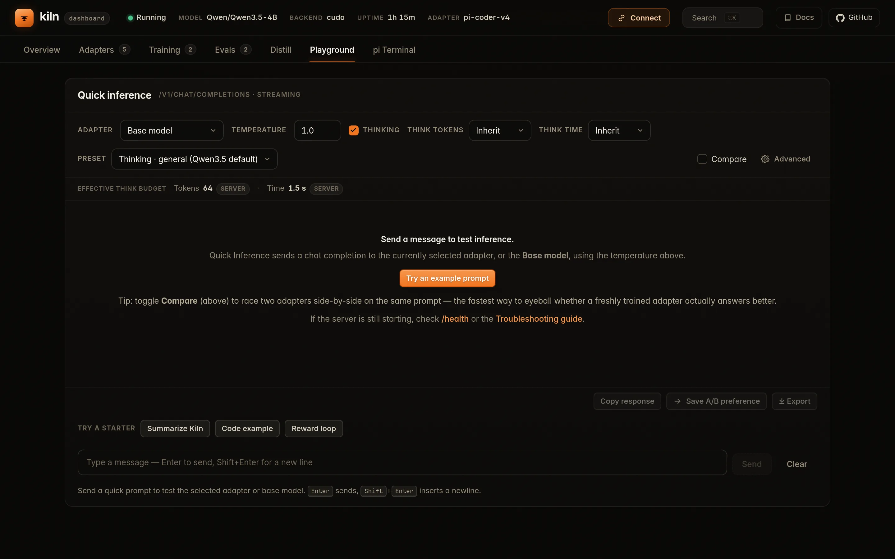
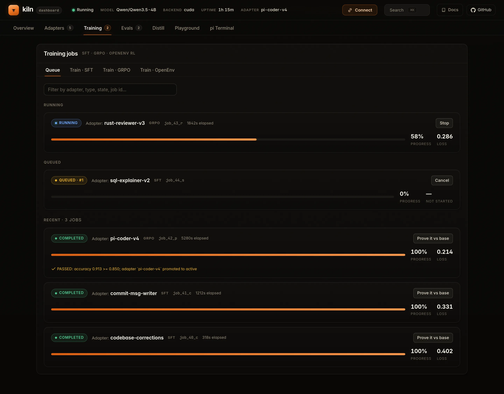
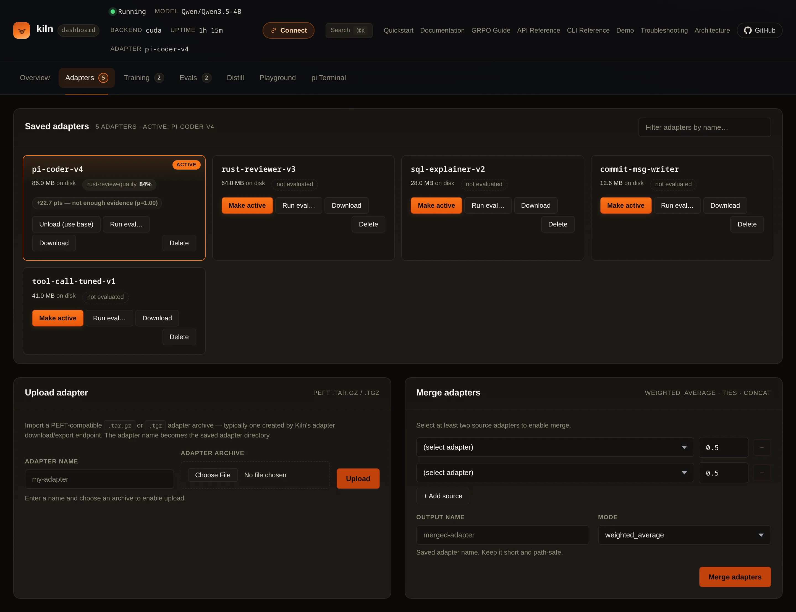

See the whole loop, from request to promoted adapter.
Observe the server, test the real API path, train a named adapter, compare the
evidence, and activate the winner. Every screen below was rendered from the embedded
dashboard at source commit 1eacf5100. Its seeded fixture data is kept
separate from measured performance.
1eacf5100.
Data: deterministic seeded demo fixtures, not a live performance run.
Captured: July 30, 2026 at 1440 px.
Performance claims live on the benchmark page, never in a
staged screenshot.
Know what is actually running.
The overview joins readiness, accelerator state, traffic, memory, adapters, and recent activity. It is the first place to verify the selected backend before drawing conclusions from a request or benchmark.

Read the effective accelerator and runtime policy instead of inferring it from a build name.
Trace traffic, latency phases, failures, and queue behavior from one operational view.
See serving, training, adapters, and memory as one process-wide system.
Test the exact request path your client will use.
The playground sends through Kiln's real OpenAI-compatible API. Select the adapter, sampling, output, and thinking policy explicitly; then inspect the response rather than treating a canned chat mockup as runtime proof.

Use the same chat endpoint from curl, the Python SDK, agents, or the browser UI.
Base and LoRA behavior are selected per request; the newest training job does not silently win.
Output and reasoning budgets are request policy, not hidden server folklore.
Turn evidence into a named training job.
Submit SFT, GRPO, OPD, or recipe work with an explicit dataset, adapter name, resource plan, and evaluation boundary. Progress and failure state remain inspectable while the server continues to own the accelerator.

Resolve memory and route support before a long job mutates state.
Training produces a versioned adapter and manifest, not an anonymous in-memory change.
A completed optimizer step is not the same thing as a promoted model improvement.
Compare, inspect, then activate.
The adapter library binds artifacts to their base model and evaluation evidence. Load or select a winner deliberately, keep alternatives available, and retain the provenance needed to reproduce the decision.

Adapters retain the model and configuration they were trained against.
Promotion can be based on a comparison instead of training loss alone.
Change what serves without loading another copy of the base weights.
Run the current flow.
Start with a real health check and one real request. The complete platform-specific path is in the Quickstart; training and evaluation continue in the GRPO and Evals guides.
The complete interactive train, evaluate, and adapter-activation loop shown
above works in the default stable profile. experimental
is reserved for backend qualification. See
Serving profiles for the exact ownership policy.
# Verify readiness and the selected backend
curl -fsS http://127.0.0.1:8420/health | python3 -m json.tool
# Send the same API shape used by the playground
curl -fsS http://127.0.0.1:8420/v1/chat/completions \
-H 'content-type: application/json' \
-d '{
"model": "Qwen3.5-4B",
"messages": [{"role":"user","content":"Give one debugging rule."}],
"temperature": 0,
"max_tokens": 64
}' | python3 -m json.tool
# Then open the operational UI in your browser:
# http://127.0.0.1:8420/ui/Historical terminal recordings · archived, not current product proof Captured May 4, 2026 · RTX A6000 · pre-v0.5.0 behavior
These six recordings are retained because they document earlier workflows and output. They were previously presented as the current demo without a capture date, which was misleading. Some endpoints, CLI output, and timing no longer represent the latest published release. Use the current guides above for reproduction.
Original scripts remain in the repository archive for auditing.